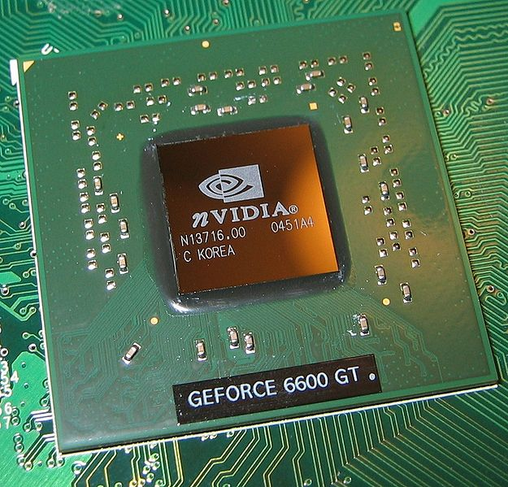

Una pequeña introducción
Informática: El término “informática” proviene de la fusión de los términos “INFORmación” y “autoMÁTICA” . La informática es una ciencia que estudia el tratamiento automático de la información .
Sistema informático: Sistema de procesamiento de la información basado en ordenadores.
Ordenador: Máquina capaz de aceptar datos a través de un medio de entrada, procesarlos automáticamente bajo el control de un programa previamente almacenado, y proporcionar la información resultante a través de un medio de salida.

Esta información que se procesa puede ser superflua o incompleta, o poco clara, o demasiado voluminosa, o llegar demasiado tarde para ser aprovechada (es decir, puede no ser del todo útil).
La Informática se ocupa de la información como materia esencial de estudio; con esta información es preciso:
- Representarla en forma eficiente y automatizable.
- Retransmitirla sin errores ni pérdidas.
- Almacenarla para poderla acceder y recuperar tantas veces como sea preciso.
- Procesarla para obtener nuevas informaciones más elaboradas y más útiles a nuestros propósitos.